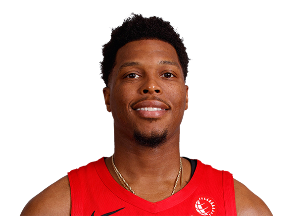

KYLE LOWRY

Kyle Lowry was drafted in the 1st round in the 2006 NBA Draft with the 24th pick by the Memphis Grizzlies, and then traded to the the Houston Rockets in 2009. In the 2012-13 season Kyle Lowry was then traded to the Toronto Raptors for Gary Forbes and a future first round pick. In Kyle Lowry’s 9 year career he has be selected to 6 NBA All-Star Games, 1 All-NBA Third Team and 1 NBA Championship. Kyle Lowry’s career highs are, 43 Points, 14 Rebounds, 19 Assists, 7 Steals and 4 Blocks.